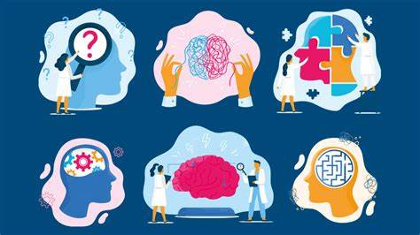
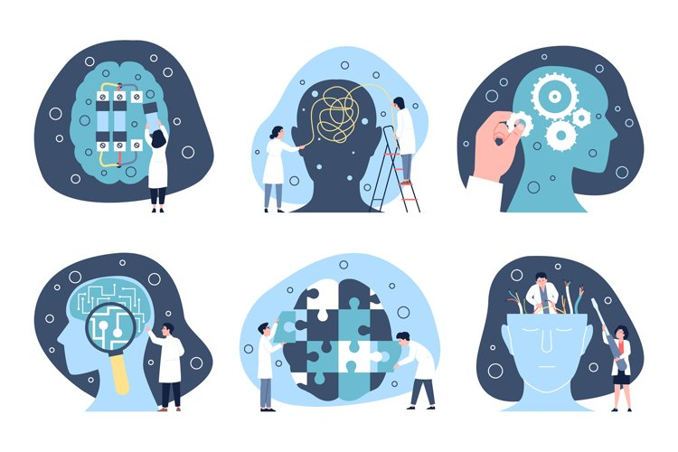

es de vital importancia reconocer las señales de alerta que pueden indicar la presencia de problemas emocionales o trastornos mentales. Las señales de alerta son manifestaciones o síntomas que pueden ser indicativos de que algo no está funcionando correctamente en nuestra salud mental. Estas señales pueden variar en intensidad y frecuencia, pero es crucial prestarles atención y buscar ayuda profesional si es necesario.
Es importante estar atentos a las señales de que nuestra salud mental puede estar deteriorándose. Identificarlas a tiempo puede marcar la diferencia.
El reconocimiento de las señales de alerta en la salud mental es fundamental para poder tomar acciones a tiempo y prevenir el desarrollo de enfermedades mentales más graves. Identificar estos signos tempranos nos permite intervenir de manera oportuna y buscar las estrategias necesarias para mejorar nuestra salud mental y bienestar
Es importante tener en cuenta que cada persona es única y puede presentar diferentes señales de alerta. Por eso, es fundamental conocer y estar atentos a los cambios en nuestro propio comportamiento y emociones, así como en el de las personas cercanas. No debemos subestimar ninguna señal, por pequeña que parezca, ya que podría ser el primer indicio de un problema mayor.
Ante cualquier señal de alerta en la salud mental, es fundamental buscar apoyo profesional. Los expertos en salud mental, como psicólogos y psiquiatras, están capacitados para evaluar y tratar diferentes trastornos y problemas emocionales. Ellos pueden brindar un diagnóstico adecuado y recomendar el tratamiento más adecuado para cada situación.
Es importante recordar que buscar ayuda profesional no es un signo de debilidad, sino todo lo contrario. Reconocer que necesitamos apoyo y tomar la decisión de buscarlo es un acto valiente y responsable. Un profesional de la salud mental puede ofrecer orientación, terapia y, en algunos casos, medicación para ayudar a superar los desafíos emocionales.
